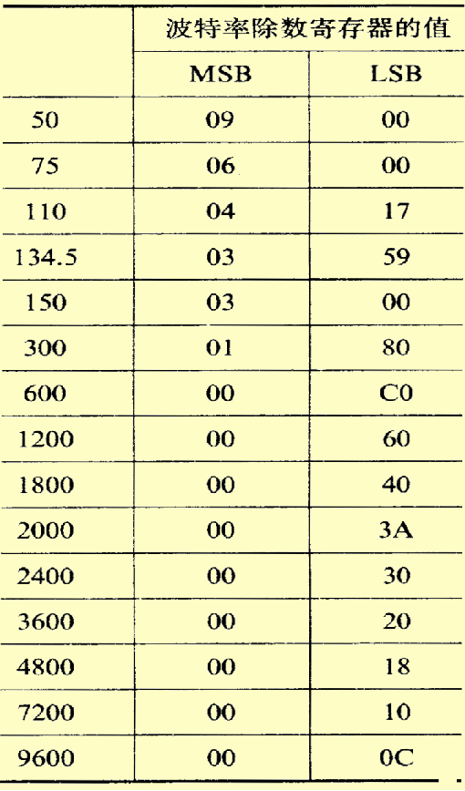
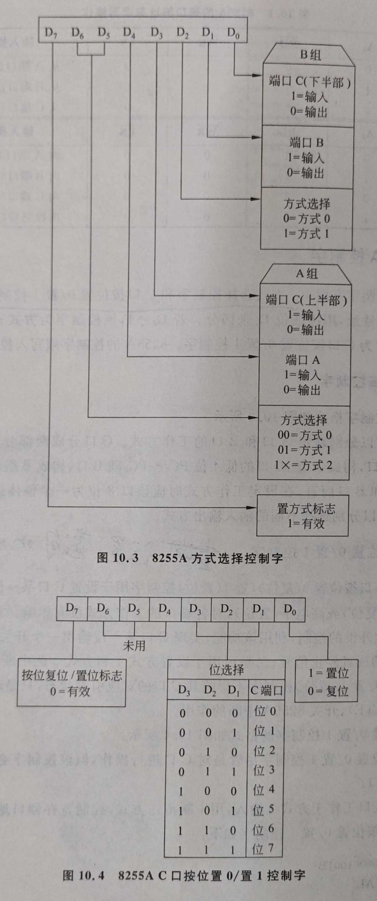

微机原理和接口技术
IO
-
端口的分类：数据端口、控制端口、状态端口
-
直接寻址 I/O 指令，端口有8位，可寻址256个端口
IN AL, 80H ; 将80H端口数据读到AL
IN AX, 80H ; 将80H数据写入AL，81H数据写入AH
IN EAX, 80H ; 类似上面的
OUT 80H, AL ; 将AL数据写入80H端口
OUT 80H, AX ; 将AL数据写入80H端口，将AH数据写入81H端口
OUT 80H, EAX ; 类似上面的
- 间接寻址I/O 指令，当端口大于8位
微机系统与 I/O 端口的信息交换的四种方式
无条件传送方式
无条件传送方式：在外设数据准备好时执行IN指令，或者输出设备空闲时执行OUT指令
查询方式
-
输入：从状态口读取状态信息，如果数据准备好就执行IN，否则循环从状态口读取状态信息
-
输出：从状态口读取状态信息，如果外设空闲就执行OUT，否则循环从状态口读取状态信息，数据口和状态口共用一个端口
中断方式
- CLI 关中断
-
STI 开中断
-
IRET 中断返回，在中断服务程序的尾部
- INT n 软件中断指令
- INTO 中断溢出指令
中断的分类
- 外部中断：由CPU以外的设备发出，并由 CPU的中断请求信号引脚输入所引发的中断称为外部中断，也称为硬件中断。 80X86 CPU有2个引脚(INTR和NMI)可以接收外部的中断请求信号。由输入到INTR引脚的中断请求信号引发的中断称为可屏蔽硬件中断。由输入到NMI引脚的中断请求信号引发的中断称为非屏蔽硬件中断。
- 由CPU硬件故障或程序执行中的事件所引发的中断称为内部中断。内部中断可以进一步分为软件中断和异常。执行有定义的INT n指令而引发的中断,称为软件中断。软件中断可分为BIOS中断、DOS中断。软件中断不可屏蔽。由于CPU本身故障、程序故障等引发的中断，称为异常。
中断向量
中断向量是实模式下，中断服务子程序的入口地址
它由2部分组成:（按顺序）
-
服务程序入口的偏移地址（2个字节）
-
服务程序所在代码段的段基址（2个字节）
中断向量表
中断类型码通过一个地址指针表与中断服务程序的入口地址相联系：
实模式下：该表称为中断向量表；
保护模式下：该表称为中断描述符表。
中断向量表在RAM的（00000H ～ 003FFH)地址，共1K单元
- 可以使用DOS的35H获取中断向量
- input: AH = 35H, AL = 中断号
- output: ES: BX = 中断向量
- 可以使用DOS的25H修改中断向量
- input: AH = 35H, AL = 中断号, DS = 中断服务程序所在的段基址, DX = 中断服务程序所在的段偏移地址
8259A
-
IRR是中断请求控制器。它保存从IR0-IR7来的中断请求信号。某一位有1就表示相应引脚上有中断请求信号。中断响应后，该IR输入线上的请求信号应该撤销。
-
ISR是中断服务寄存器。它用于保存正在服务的中断源。在中断响应时，判优电路把发出中断请求的中断源中优先级最高的中断源所对应的位设置为1，表示该中断源正在处理中。ISR某一位置1课阻止与它同级和更低优先级的请求被响应，但允许更高优先级的请求被响应。
-
IMR是中断屏蔽寄存器。它用于存放中断控制字，其中为1的位表示对应的中断请求输入将被屏蔽。
硬件中断源和终端类型对照表
| 主8259 | 中断源 | 中断类型 | 从8259 | 中断源 | 中断类型 |
|---|---|---|---|---|---|
| IR0 | 日时钟 | 08H | IR0 | 实时时钟 | 70H |
| IR1 | 键盘 | 09H | IR1 | 用户中断 | 71H改向0AH |
| IR2 | 从8259 | IR2 | 保留 | 72H | |
| IR3 | 辅串口 | 0BH | IR3 | 保留 | 73H |
| IR4 | 主串口 | 0CH | IR4 | 保留 | 74H |
| IR5 | 并行口2 | 0DH | IR5 | 协处理器 | 75H |
| IR6 | 软盘 | 0EH | IR6 | 硬盘 | 76H |
| IR7 | 并行口1 | 0FH | IR7 | 保留 | 77H |
系统分配给主从8259A的口地址
| 芯片 | 奇地址（中断屏蔽寄存器口） | 偶地址（接收中断结束命令口） |
|---|---|---|
| 主8259A | 21H | 20H |
| 从8259A | A1H | A0H |
日时钟中断
例：日时钟源是8254 0#计数器，每55ms发出一次中断请求，要求每1s打印一个字符串，打印10次终止。\(55 \times 18 = 990 \approx 1000\)
- 法1：置换1CH中断向量
.486
data segment use16
mesg db 'helloworld', 0ah, '$'
icount db 18
count db 10
old dd ?
data ends
code segment use16
assume ds: data, cs: code
beg:
mov ax, data
mov ds, ax
; store and rewrite interrupt vector
cli
call read
call write
sti
; main loop, if print str 10 times, go to reset
scan: cmp count, 0
jnz scan
cli
call reset
sti
mov ah, 4ch
int 21h
; interrupt server
server proc
pusha
push ds
mov ax, data
mov ds, ax
dec icount
jnz exit
mov icount, 18
dec count
mov ah, 9
mov dx, offset mesg
int 21h
exit:
pop ds
popa
iret
server endp
; read and store the old interrupt vector
read proc
mov ax, 351ch
int 21h
mov word ptr old, bx
mov word ptr old+2, es
ret
read endp
; write user defined interrupt server vector
write proc
push ds
mov ax, seg server
mov ds, ax
mov dx, offset server
mov ax, 251ch
int 21h
pop ds
ret
write endp
; write back the former vector
reset proc
push ds
mov dx, word ptr old
mov ds, word ptr old+2
mov ax, 251ch
int 21h
pop ds
ret
reset endp
code ends
end beg
- 法2：置换08H中断向量，相比法1，有三点不同
- 所有的DOS 25H，35H中调用的接口改为08H
- 中断服务程序中
mov ax, data和mov ds ax没有了 - 中断服务程序的结尾不是
iret而是jmp old
用户中断
例：8254每100ms发送一次中断请求，要求每1秒打印一个字符串，直到键盘按下终止。
.486
data segment use16
mesg db 'helloworld', 0ah, '$'
icount db 10
old dd ?
data ends
code segment use16
assume ds: data, cs: code
beg:
mov ax, data
mov ds, ax
; store and rewrite interrupt vector
cli
call read
call write
call i8259a
sti
; main loop, if print str 10 times, go to reset
scan: mov ah, 1
int 16h
jz scan
cli
call reset
sti
mov ah, 4ch
int 21h
; interrupt server
server proc
pusha
push ds
mov ax, data
mov ds, ax
dec icount
jnz exit
mov icount, 10
mov ah, 9
mov dx, offset mesg
int 21h
exit:
; sent end message to 8259a
mov al, 20h
out 20h, al
pop ds
popa
iret
server endp
; read and store the old interrupt vector
read proc
mov ax, 350ah
int 21h
mov word ptr old, bx
mov word ptr old+2, es
ret
read endp
; write user defined interrupt server vector
write proc
push ds
mov ax, seg server
mov ds, ax
mov dx, offset server
mov ax, 250ah
int 21h
pop ds
ret
write endp
i8259a proc
; enable subordinate 8259
in al, 0a1h
mov al, 11111101B
out 0a1h, al
; enable principal 8259
in al, 21h
mov al, 11111011B
out 21h, al
ret
i8259a endp
; write back the former vector
reset proc
push ds
mov dx, word ptr old
mov ds, word ptr old+2
mov ax, 250ah
int 21h
pop ds
ret
reset endp
code ends
end beg
DMA方式
特点：
- 用硬件实现在外设与内存间直接进行数据交换，而不通过CPU
- 数据传送速度的上限就取决于存储器的工作速度
- 速度快
串行通信
串行通信：一条道，一个一个走；并行通信：多条道，全部一起走
8250内部寄存器
-
发送保持寄存器(3F8H/2F8H)
-
该寄存器保存CPU传送来的并行数据，并转移至发送移位寄存器
-
接收缓冲寄存器(3F8H/2F8H)
-
接收移位寄存器，去掉起始位，校验位和停止位，转换成并行数据，转换后的并行数据存入接收缓冲寄存器，等待CPU接收。
-
通信线状态寄存器 (3FDH/2FDH)
-
寄存通信线状态
-
中断允许寄存器(3F9H/2F9H)
-
中断识别寄存器(3FAH/2FAH)
-
由于8250仅能向CPU发出一个总的中断请求信号,为了识别是哪一个中断源引起的中断，应在转入中断服务程序之后，读取中断识别寄存器的内容进行判断，然后再转入相应的处理程序。
-
MODEM控制寄存器(3FCH/2FCH)
-
在8250用中断方式与CPU交换信息时，D3应=1
-
在8250用查询方式与CPU交换信息时，D3应=0
-
除数寄存器（高8位3F9H/2F9H,低8位3F8H/2F8H)
-
存放初始化时编程时写入的分频系数
-
\[ 分频系数 = \frac{1.8432M}{16 \times 波特率} = \frac{64^2\times450}{16 \times 波特率} \]
-
通信线控制寄存器(3FBH/2FBH)
-
该寄存器主要用于指定串行异步通信的数据格式
8250初始化
用户可以自定义的部分
- 使用主/辅串口
-
波特率 -> 除数寄存器（高8位3F9H/2F9H,低8位3F8H/2F8H)
-
将4byte分频系数分高低位先后写入除数寄存器
-

-
串行通信的格式 -> 通信线控制寄存器(3FBH/2FBH)
-
将控制字写入通信线控制寄存器
-
设置中断允许 -> 中断允许寄存器(3F9H/2F9H)
-
将中断允许位写入中断允许寄存器，D0是接收中断使能，D1是发送中断使能
-
是否使用中断&是否自发收 -> MODEM控制寄存器(3FCH/2FCH)
-
将MODEM控制字写入MODEM控制寄存器，如果使用中断方式，D3置1，如果自循环，D4置1
-
正常通信，不中断：MODEM控制字 = 0000 0000 B
- 正常通信，会中断：MODEM控制字 = 0000 1000 B
- 自发自收，不中断：MODEM控制字 = 0001 0000 B
- 自发自收，会中断：MODEM控制字 = 0001 1000 B
基本格式(主串口)
I8250 PROC
; 寻址位置1，通信线控制寄存器
MOV DX, 3FBH
MOV AL, 80H
OUT DX, AL
; 置分频系数，先高8位后低8位
MOV DX, 3F9H
MOV AL, 分频系数高八位
OUT DX, AL
MOV DX, 3F8H
MOV AL, 分频系数低八位
OUT DX, AL
; 定义数据格式，通信线控制寄存器
MOV DX, 3FBH
MOV AL, 数据格式定义
OUT DX, AL
; 中断允许寄存器
MOV DX, 3F9H
MOV AL, 中断允许位
OUT DX, AL
; MODEM控制寄存器
MOV DX, 3FCH
MOV AL, 中断使能定义&是否循环
OUT DX, AL
RET
I8250 ENDP
查询方式收发
; 利用主串口查询方式发送一个'A'
SCAN: MOV DX, 3FDH
IN AL, DX
TEST AL, 20H
JZ SCAN
MOV DX, 3F8H
MOV AL, 'A'
OUT DX, AL
; 利用主串口查询方式接收一个字符
SCAN: MOV DX, 3FDH
IN AL, DX
TEST AL, 01H
JZ SCAN
MOV DX, 3F8H
IN AL, DX
8254定时/计数器
常用工作方式
- 方式2: 分频器(脉冲发生器)
- 方式3: 方波发生器
其他看例题就行，附录中有详细的控制字手册
并行接口8255A
结构
- 24根端口数据线接外设
- PA7~PA0为A口数据线
- PB7~PB0为B口数据线
-
PC7~PC0为C口数据线
-
8根系统数据线接CPU
-
D7~D0，CPU通过数据线写控制字和数据，也可以接收数据
-
6根输入控制线
-
RESET：复位信号，RESET=1时，8255内部复位，所有内部寄存器清零，A、B、C三个端口自动为输入口
-
CS：片选信号，CS=0时，该芯片被选中
-
RD：来自CPU的I/O读命令
-
A1、A0：通常接CPU的地址线A1、A0
- WR：来自CPU的I/O写命令
三种工作方式
| 工作方式 | 适用端口 |
|---|---|
| 方式0：基本型IO | A, B, C |
| 方式1：选通型IO | A, B |
| 方式2：双向传输 | A |
方式0
- 输入：执行IN，8255将数据从对应端口传到CPU
- 输出：执行OUT，CPU将数据传给8255,8255将数据锁存到对应端口
方式1
-
输入：
-
输出：
